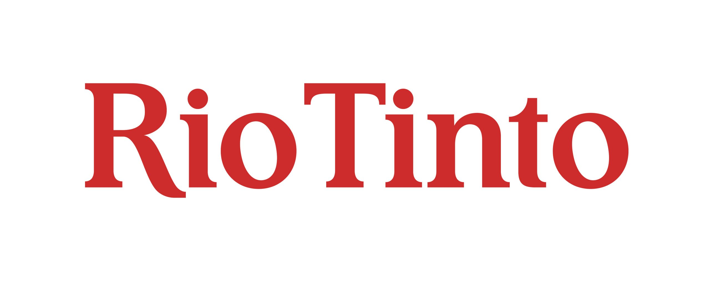

Projet 13 : Stage chez Rio Tinto
Mise en place d'un système de gouvernance des données pour l'industrie métallurgique chez Rio Tinto (LRF), incluant DataHub, PostgreSQL et Grafana Business Forms.
Stage · Rio Tinto LRFAvr – Juin 2025



À propos du projet
Durant mon stage chez Rio Tinto LRF, j'ai participé à la création d'une solution de gouvernance des données en mettant en place DataHub avec PostgreSQL et Grafana Business Forms. Le but était de faciliter l'accès, la saisie et la compréhension des données de capteurs industriels par les équipes techniques. J'ai réalisé l'intégralité du déploiement, la configuration des catalogues de données et l’intégration de formulaires utilisateurs simples.
Compétences développées :
- Installation et déploiement Docker & DataHub
- Configuration de bases de données PostgreSQL
- Création de formulaires d'interaction Grafana
- Création de documentation technique pour les utilisateurs métier
- Migration sur Raspberry Pi et gestion de containers Dockge